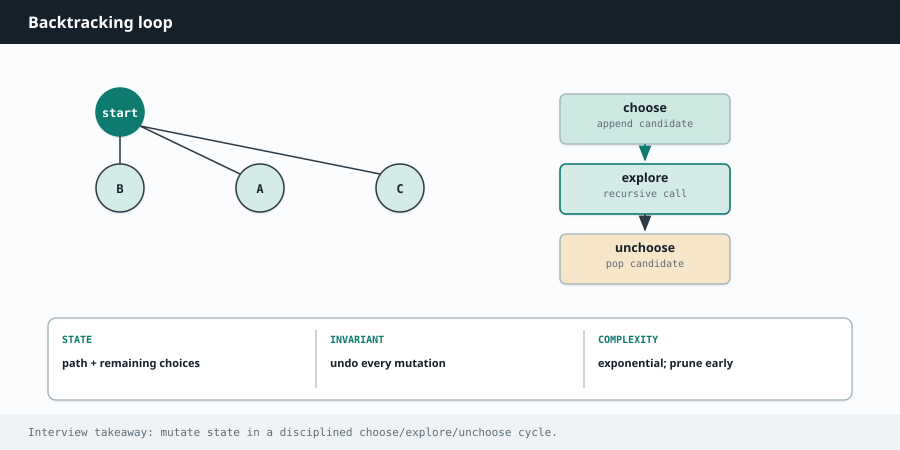

Competitive Programming
Chapter 11
Backtracking

R E C U R S I O N Fa M I Ly
Backtracking is organized trial and error. You build a solution one choice at a time. When a choice leads nowhere, you undo it and try the next option. It is how you generate all subsets, all permutations, all combinations, and how you solve puzzles like Sudoku and the N-Queens board. [ ] skip 1 take 1 [ ] [2] [1] [1,2] at each item you branch: include it or skip it the leaves are all the subsets Backtracking explores this tree of choices, then rewinds to try the other branch.
R E A C H F O R B A C K T R A C K I N G W H E N Y O U S E E
"Generate all...", "find every combination / permutation / subset", "list all valid arrangements", or a constraint puzzle. The giveaway in the constraints is a small input size, often n up to about 15 or 20, because the number of possibilities grows explosively and only stays feasible when n is small.
The universal template: choose, explore, unchoose
Every backtracking solution has the same rhythm. You make a choice (add something to your current path), you recurse to build on it, then you undo the choice (remove it) so you can try the next option. That undo step is the "backtrack," and it is what makes the whole search work.
def backtrack(path, options):
if is_complete(path): # reached a full solution
record(path)
return
for choice in options:
path.append(choice) # choose
backtrack(path, next_options(choice)) # explore
path.pop() # unchoose (this is the backtrack)
void backtrack(List<Integer> path, ...) {
if (isComplete(path)) { // full solution reached
record(path);
return;
}
for (int choice : options) {
path.add(choice); // choose
backtrack(path, ...); // explore
path.remove(path.size() - 1); // unchoose
}
}
Worked example: all subsets
For each element you have two choices: include it or leave it out. Recurse through the elements, and every time you run out of elements you have formed one complete subset. Record a copy of the current path at every node, because subsets include the partial ones too.
def subsets(nums):
result = []
def backtrack(start, path):
result.append(path[:]) # record a copy of the current subset
for i in range(start, len(nums)):
path.append(nums[i]) # choose nums[i]
backtrack(i + 1, path) # explore with the rest
path.pop() # unchoose
backtrack(0, [])
return result
List<List<Integer>> subsets(int[] nums) {
List<List<Integer>> result = new ArrayList<>();
backtrack(nums, 0, new ArrayList<>(), result);
return result;
}
void backtrack(int[] nums, int start, List<Integer> path,
List<List<Integer>> result) {
result.add(new ArrayList<>(path)); // record a copy
for (int i = start; i < nums.length; i++) {
path.add(nums[i]); // choose
backtrack(nums, i + 1, path, result); // explore
path.remove(path.size() - 1); // unchoose
}
}
Worked example: all permutations
Permutations differ from subsets in one way: order matters and you use every element. So instead of a start index, you track which elements are still available and pick any unused one at each step.
def permutations(nums):
result = []
used = [False] * len(nums)
def backtrack(path):
if len(path) == len(nums): # used everything
result.append(path[:])
return
for i in range(len(nums)):
if used[i]:
continue # skip already-used elements
used[i] = True
path.append(nums[i]) # choose
backtrack(path) # explore
path.pop() # unchoose
used[i] = False
backtrack([])
return result
List<List<Integer>> permutations(int[] nums) {
List<List<Integer>> result = new ArrayList<>();
boolean[] used = new boolean[nums.length];
backtrack(nums, used, new ArrayList<>(), result);
return result;
}
void backtrack(int[] nums, boolean[] used, List<Integer> path,
List<List<Integer>> result) {
if (path.size() == nums.length) {
result.add(new ArrayList<>(path));
return;
}
for (int i = 0; i < nums.length; i++) {
if (used[i]) continue;
used[i] = true;
path.add(nums[i]);
backtrack(nums, used, path, result);
path.remove(path.size() - 1);
used[i] = false;
}
}
P R U N E E A R L Y T O G O F A S T E R
The real speed in backtracking comes from cutting off dead branches as soon as you can tell they will fail. In combination sum, if the running total already passed the target, stop; do not keep adding. In N-Queens, check for conflicts before placing a queen, not after. A good prune can turn an impossible search into an instant one.
W A T C H O U T
When you save a solution, save a copy, not the live path. In Python that is path[:] , in Java it is new ArrayList<>(path) . If you store the path directly, later backtracking edits it and every saved answer ends up identical and wrong. This single mistake accounts for a huge share of backtracking bugs.
Deeper Intuition
Why choose, explore, unchoose works
Backtracking is depth first search over the tree of all choices. You choose an option, recurse to explore everything that follows, then undo the choice so you can try the next one. That rhythm visits every valid arrangement exactly once. The thing that keeps it from being hopelessly slow is pruning: the instant a partial choice cannot lead to a valid answer, you stop and back out instead of exploring a dead branch.
cut a branch the moment it cannot lead to a valid answer [] X prune: 9 already exceeds the target 2 9 2,2 2,4 Backtracking explores the tree of choices, but pruning skips whole branches that cannot possibly work.
Another worked example: Combination Sum
Find every combination of numbers that adds up to a target, where each number may be reused.
Try candidates from a start index so you never repeat a combination in a different order, and prune any branch whose next candidate already exceeds what remains.
def combination_sum(candidates, target):
result = []
def backtrack(start, remaining, path):
if remaining == 0:
result.append(path[:]) # a valid combination
return
for i in range(start, len(candidates)):
if candidates[i] > remaining:
continue # prune: too big
path.append(candidates[i])
backtrack(i, remaining - candidates[i], path) # reuse allowed
path.pop() # unchoose
backtrack(0, target, [])
return result
List<List<Integer>> combinationSum(int[] candidates, int target) {
List<List<Integer>> result = new ArrayList<>();
backtrack(candidates, 0, target, new ArrayList<>(), result);
return result;
}
void backtrack(int[] c, int start, int remaining,
List<Integer> path, List<List<Integer>> result) {
if (remaining == 0) { result.add(new ArrayList<>(path)); return; }
for (int i = start; i < c.length; i++) {
if (c[i] > remaining) continue; // prune
path.add(c[i]);
backtrack(c, i, remaining - c[i], path, result); // reuse i
path.remove(path.size() - 1); // unchoose
}
}
Going Deeper
What kinds of problems this solves
U S E T H I S P A T T E R N F O R
Any request to build all of something by making a sequence of choices: every subset, every permutation, every combination, or filling a board under constraints. If the word all appears and the input is small, this is usually it.
| Problem type | Classic examples |
|---|---|
| Subsets and combinations | Subsets, Subsets II, Combinations, Combination Sum, Combination Sum II, Letter Combinations of a Phone Number |
| Permutations | Permutations, Permutations II, Next Permutation via ordering |
| Partitioning and boards | Palindrome Partitioning, N-Queens, Sudoku Solver, Word Search, Restore IP Addresses |
The algorithm, in a bit more detail
Backtracking is depth first search over the tree of choices. At each step you choose an option, recurse to explore everything that follows from it, then undo the choice so you can try the next option. That choose, explore, unchoose rhythm is the whole template, and it guarantees you visit every valid arrangement exactly once.
The thing that keeps it from being hopelessly slow is pruning. The moment a partial choice cannot possibly lead to a valid answer, you stop and back out instead of exploring a dead branch. Good pruning is often the difference between passing and timing out on N-Queens or Sudoku.
Variations you will run into
For combinations you pass a start index so you never reuse earlier elements and never repeat a set in a different order. For permutations you track which elements are already used. To handle duplicates, sort first and skip a value that equals the previous one at the same depth.
Edge cases and gotchas
Always undo your choice after the recursive call, or state leaks between branches.
When you record a solution, add a copy of the current path, not the live list, since it keeps changing.
Sort and skip duplicates to avoid emitting the same subset or permutation twice.
Prune early with a feasibility check, otherwise the exponential blowup will time out.
S T E P B Y S T E P
Generating all subsets of [1, 2] with choose, explore, unchoose. Every path down the decision tree records one subset.
Start with the empty subset [] and record it. 1 Choose 1, giving [1], and record it. 2 From [1], choose 2, giving [1, 2], and record it, then unchoose 2 to return to [1]. 3 Unchoose 1 to return to []. Now choose 2, giving [2], and record it, then unchoose 2. 4 Every choice has been explored. Subsets found: [], [1], [1, 2], [2]. 5